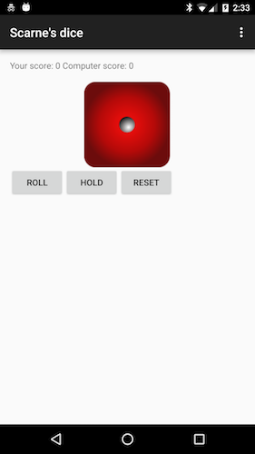

In this unit, we will explore in more details the structure of an Android app.
We'll start by doing the "build your first app" activity on the Android developer site (the next step has more details).
Then go back to the Anagram program from last unit's activity and take a look at its UI and the
AnagramActivity
class to understand how it is connected to the UI and how it is connected to the
AnagramDictionary.
In Android Studio, create a new project:
Fill out the fields on the screen, and click Next.
The following describes the values to fill in:
This should have set you up with a simple hello world project, that can be run on a device or emulator.
Check out the documentation on running your app here
Scarne’s Dice is a turn-based dice game where players score points by rolling a die and then:
The winner is the first player that reaches (or exceeds) 100 points.
For example, if a player starts their turn and rolls a 6, they can choose to either ‘hold’ and end their turn, in which case they can add the 6 to their score, or to reroll and potentially score more points.
Let’s say they decide to roll again, and they get a 4. They now have the option to end their turn and add 10 points (6 + 4) to their score, or to roll again to get even more points.
They decide to roll again, but get a 1. Getting a 1 makes the player lose all the points from their turn (so their score is the same as before their turn), and finishes their turn, allowing the second player to begin their turn.
In this workshop, we will create the game from scratch in Android Studio. There will be no starter code in this unit’s workshop so you will need to create a simple UI for a blank activity.
To start with, create a new project (following instructions similar to step 2). Make sure you choose empty activty and not blank activity, from the options when creating your project.
As we will be implementing a turn-based dice game, we will require a way to roll the die (and show the result), end the player turn and to reset the game.
Thus you will need to create the UI shown in the image below using either the visual editor or the XML editor (or probably a combination of both).

The UI is composed of:
TextView to display the score and status of the gameImageView to display the current die (default to the image of your choice from these dice faces)Be sure to copy the dice faces into your project path. The files should be copied to app/src/main/res/drawable.
The following xml script should give you an idea.
<TextView android:text="Starting Game.." android:layout_width="wrap_content"
android:layout_height="wrap_content"
android:id="@+id/status"
android:layout_alignParentTop="true"
android:layout_alignParentLeft="true"
android:layout_alignParentStart="true"
android:textSize="8pt"
android:textStyle="bold" />
<ImageView
android:layout_width="wrap_content"
android:layout_height="wrap_content"
android:id="@+id/dice"
android:src="@drawable/dice1"
android:layout_marginTop="27dp"
android:layout_below="@+id/status"
android:layout_centerHorizontal="true" />
<LinearLayout
android:orientation="horizontal"
android:layout_width="wrap_content"
android:layout_height="wrap_content"
android:paddingLeft="2pt"
android:layout_below="@+id/dice"
android:layout_centerHorizontal="true"
android:layout_marginTop="73dp">
<Button
android:layout_width="wrap_content"
android:layout_height="wrap_content"
android:text="Roll"
android:id="@+id/roll_btn" />
<Button
android:layout_width="wrap_content"
android:layout_height="wrap_content"
android:text="Hold"
android:id="@+id/hold_btn" />
<Button
android:layout_width="wrap_content"
android:layout_height="wrap_content"
android:text="Reset"
android:id="@+id/reset_btn" />
</LinearLayout>
All the game logic for this app will be implemented in the Activity class (the file will be called MainActivity.java if you accepted the default name). The Activity template has some default methods to which you will add:
Use getResources().getDrawable in order to programmatically access other images. This functionality will also be needed for the computer turn so a helper function to roll the die may be useful to implement.
The following code snippet illustrates how you can use the Random class to programmatically generate dice values and assign dice images.
Make sure to import java.util.Random;
Now you can start creating the game logic. If the roll is not a 1, update the user's turn score by the value of the roll and update the label to "Your score: 0 computer score: 0 your turn score: X". If the roll is a 1, reset the turn score to 0 and update the label accordingly. TextView can be edited programmatically by calling findViewById to get the TextView object.
Having written the basic "Roll" functionality, you can tackle the other two button handlers:
ResetButton is clicked, reset the 4 global variables to 0 and update the label textHoldButton is clicked, updating the user's overall score, reset the user round score and update the label.At this stage, the basic user turn functionality is in place.
At this stage, the basic user turn functionality is in place. Now, you can implement the computer turn. Start off with a very simple strategy for the computer: if the computer's round score is less than 20, re-roll, otherwise hold.
Create a helper method called computerTurn, it will need to:
Be sure to update the label with the computer's round score or "Computer holds" or "Computer rolled a one" as appropriate.
Finally, invoke the computerTurn procedure from the both the HoldButton handler and the RollButton handler (if the user rolled a 1).
You may find again that a helper procedure is useful in doing the house cleaning that concludes the computer's turn (updating the computer's overall score, reset its turn score and reenabling the buttons).
The game should now be functional so try playing a few rounds against the computer. Remember to use the logging library that you read about in last unit's preparation to help diagnose what is happening when your program doesn't behave as expected.
Although the game (hopefully) works roughly as intended you may find the computer turn to be quite hard to follow as it happens so quickly that you can hardly see the die rolls and the label updates. Let's address that by refactoring the computer turn:
computerTurn method handle a single roll of the computer's turnHandler.postDelayed, an example of which can be seen on StackOverflow.Enjoy the wonders of a fully functional game of Scarne's dice!
You can create a runnable in the computerTurn method, that includes the logic for one roll by the computer.
This can be called with the help of a Handler which uses a delay. Thus the computer's rolls are observable.
The following code snippet shows how a runnable can be created and used within computerTurn.
This unit's extension suggestions are: